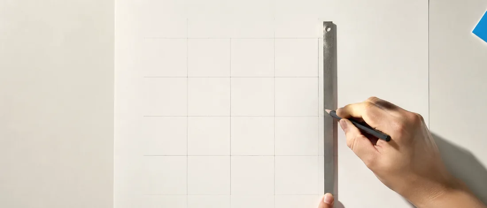
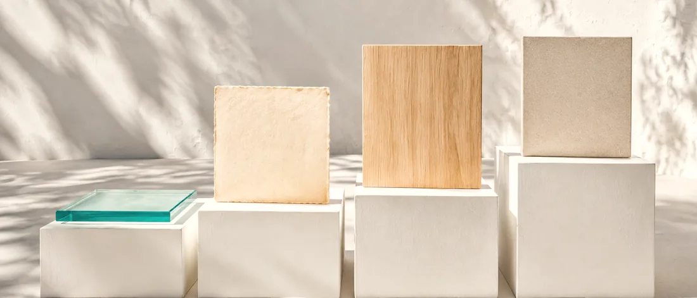
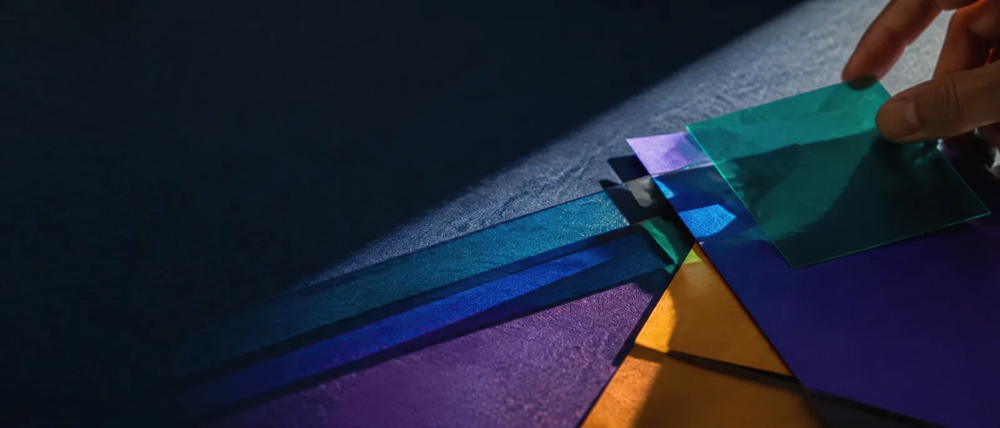

小規模事業者向け Webサイト制作買い切り 80,000円〜
「何を優先するか」から、
Webサイトを組み立てる。
誰に、何を、どう伝えるか。36タイプの無料診断で方向を整理してから、必要なページだけを作ります。文章や写真が最初から決まっていなくても始められます。
- 氏名・メール登録なし
- 診断だけの利用も可能
- 16問と48問から選択
- 診断の設問
- 16問または48問
- 判定できる方向
- 36タイプ
- 制作費
- 80,000円〜
登録なし・2〜9分
2軸 × 6段階
買い切り・4つのプラン
「好きなデザイン」だけでなく、「Webサイトで何を優先するか」から。
マスを選ぶと、そのタイプの名前が出ます。タイプに優劣はありません。
↑先進・新しさ
↓王道・安心
←実用・情報
ブランド・魅力→
Webサイトで今優先したい考えに、どの程度近いですか。答えるとマップ上の方向が動きます。詳しい結果は16問または48問の診断で確認できます。
-
Q1第一印象の強さより、サービス内容と連絡方法がすぐ分かることを優先したい。
近い 近くない -
Q2情報へすぐ到達できることより、最初に事業の雰囲気や価値観を感じてもらうことを優先したい。
近い 近くない -
Q3独自性のある操作より、初めて見ても使い方を予想できる構成を選びたい。
近い 近くない -
Q4使い方を予想できる定番構成より、見た瞬間に新しさを感じる構成を選びたい。
近い 近くない
CA21親切案内型サイト
4問だけで見た、おおまかな方向です。タイプに優劣はありません。この4問は診断の冒頭と同じで、回答を引き継いで5問目から続けられます。
この診断は心理検査・性格診断・経営診断ではありません。Webサイト設計の方向を整理するための目安です。
親切案内型サイト
- 横軸
- 3 / 6
- 縦軸
- 3 / 6
- 領域
- 実用・情報 × 王道・安心
四つの視点を二つの軸へまとめ、各軸を6段階に分けると 6 × 6 = 36通りになります。
必要な情報へ迷わずたどり着けるか
らしさや価値が印象に残るか
見慣れた形で読み進められるか
新しさや動きで印象づけられるか
相談から公開後まで、四つの段階でお手伝いします。
番号を選ぶと内容が切り替わります。自動では切り替わりません。
「何を作るか」より先に、「何を優先するか」を整理します。
色や写真を選ぶ前に、誰へ何を伝え、どんな行動につなげたいかを考えます。Web診断36は、四つの視点からWebサイトで今優先したい方向を言葉にするための入口です。
- 所要時間
- 2〜3分 または 6〜9分
- 登録
- 氏名・メール不要
- 費用
- 無料

必要な範囲は、事業ごとに違います。
1ページの窓口を作る8万円から、文章・画像・簡易ロゴまで一緒に整える22万円まで。特定のプランをすすめるのではなく、準備状況と必要な範囲を比べて選べるようにしています。
- 制作費
- 80,000円 〜 220,000円
- ページ数
- 1 〜 5ページ前後
- 支払い
- 着手金50% / 納品前50%

原稿や写真がそろっていなくても、相談できます。
手元のメモ、既存の資料、フォームの回答をもとに、伝える順番を整理します。プランに応じて、商用利用できる画像の準備、文章の作成、簡易ロゴ、GoogleフォームやLINEなど外部サービスへの導線も整えます。
- 文章
- 支給原稿の整理 〜 紹介文の作成
- 画像
- ご支給 〜 選定・調整
- ロゴ
- おまかせプランで簡易1案
公開したサイトを、止まったままにしないために。
公開後管理は必須ではありません。必要な場合は、サーバー管理、公開状態の確認、SSLまわり、月1回までの軽微なテキスト修正、障害時の一次確認を、月額または年額で選べます。
- 月額
- 5,500円 / 月
- 年額
- 50,000円 / 年
- 必須か
- いいえ。制作のみでも可
結果は、タイプ名だけで終わりません。
相談するときは、そのまま共通言語として使えます。
親切案内型サイト
実用・情報 × 王道・安心SUMMARY ／最初に見る要点
必要な情報だけを短くそろえ、読み終える前に次の行動へ進める窓口をつくり、手順が段階で示され、途中で分からなくなっても戻れることで支える構成が向きます。
PRIORITY ／情報の優先順
- 何をする事業か
- 主なサービスと料金の目安
- 連絡方法と受付時間
- 初めての人向けの説明
STRUCTURE ／ページ構成のたたき台
- HOME
- はじめての方へ
- サービス
- 料金
- 流れ
- FAQ
- Contact
このほかに、想定する訪問状況、問い合わせまでの経路、文章の調子、配色・文字・画像・動きの方針、基本SEOの考え方、避けたい表現、公開後の運用、合いやすい業種の理由、近い3タイプとの比較、制作相談で確認する質問を表示します。

今の状況に近い進め方を選んでください。
ページ数と、文章・画像をどこまで用意できるかで比べられます。全項目の比較は料金ページにあります。
はじめて
まずは1ページでWeb上の窓口を作りたい人
80,000円
含まれるもの- 1ページ
- 支給原稿の誤字・見出しを調整
- 計測の基本設定
- 画像・ロゴはご支給
- 修正1回 ／ 1〜2週間
シンプル
必要な情報を3ページ前後で整えたい人
120,000円
含まれるもの- 3ページ前後
- フォーム回答をページへ整理
- 商用利用可能な候補素材を少数提案
- 簡易ロゴは既存を使用
- 修正1〜2回 ／ 2〜3週間
標準
5ページ前後で事業内容をしっかり伝えたい人
150,000円
含まれるもの- 5ページ前後
- 情報をページごとに配分し、見出しを調整
- 画像をページごとに選定・調整
- 外部サービス導線は別途
- 修正1〜2回 ／ 3〜4週間
おまかせ
原稿・画像・簡易ロゴも一緒に整えたい人
220,000円
含まれるもの- 5ページ前後
- 回答内容から見出し・紹介文・導線文を作成
- 画像の選定・生成・調整
- 簡易ロゴ・外部導線・GA4等の初期設定支援
- 修正1〜3回 ／ 4〜6週間
ページ数と準備状況を比べて選べます。判断が難しい項目だけ、プラン未定のままご相談ください。
※ 料金は買い切りの制作費です。公開前に確定: 消費税の表示方針
※ 公開・管理プランは別途お選びいただけます。
相談から公開までの要点を、四つにまとめました。
フォーム送信だけでは契約になりません。範囲、料金、納期、修正回数を確認してから制作を始めます。
- 01相談・内容確認
分かる範囲をフォームへ。診断は任意です
- 02見積もり・着手金50%
条件への同意と入金後に制作開始
契約・お支払い - 03素材・制作・修正
不足を整理し、プランの回数内で確認
- 04残金50%・公開
入金確認後に公開。管理は必要な場合のみ
お支払い・納品
公開して終わりにしません。
表示できているか、SSLに問題がないか、連絡先が古くなっていないか。毎月この順番で確認します。管理が不要な場合は制作のみでも相談できます。
5,500円 / 月 または 50,000円 / 年 （実質月額 約4,167円）
決める前に読める形で、整理しています。
制作会社へ相談する前にも読めます。
決める前に、整理するところから。
最初から完成イメージを求められるのではなく、診断とヒアリングでWebサイトの優先順位を言葉にし、必要なページを決めてから制作へ進みます。料金と対応範囲を先に見せて、比べてから選べる状態を大切にします。
- 分からない状態から相談できます
完成イメージが固まっていなくても構いません。
- 料金と対応範囲を先に確認できます
見積もり前に、ページ数・修正回数・納期・追加費用の考え方を公開しています。
- 特定プランを無理にすすめません
診断結果から料金プランを自動で決めることはしません。
- 架空の実績や成果保証で飾りません
実在しない顧客の声や受注件数は掲載しません。検索順位や売上も保証しません。